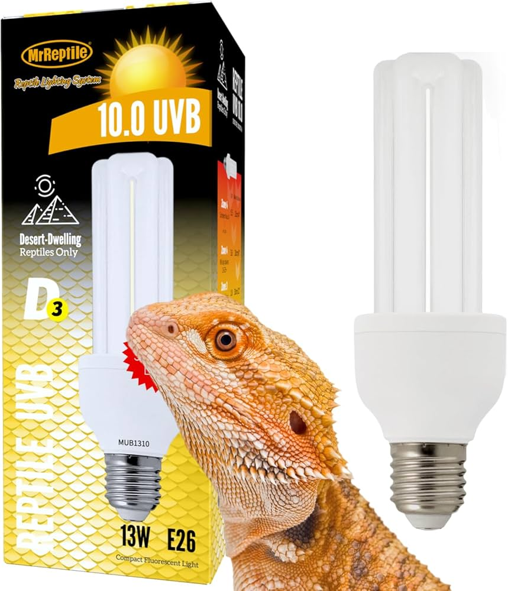
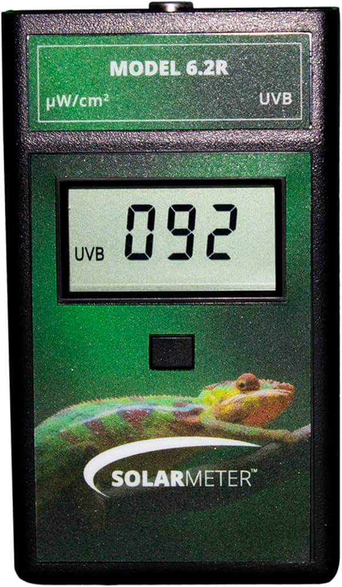

PROFESIONALNA OPREMA
Sveobuhvatni vodič kroz tehnologiju uzgoja i održavanja života.

UVB T5 LINEARNE CIJEVI
UVB zračenje je neophodno za sintezu vitamina D3. T5 High Output cijevi pružaju stabilan Fergusonov indeks kroz cijelu nastambu. Bez adekvatnog UVB-a, gmazovi gube kalcij, što vodi do metaboličke bolesti kostiju (MBD).
GRIJAĆE PLOČE (Heat Pads)
Pruža kontaktnu toplinu s donje strane. OBAVEZNO: Nikada ne spajajte grijač bez termostata. Bez kontrole, ovi grijači mogu razviti temperature preko 50°C i uzrokovati smrtonosne opekline.
TERMOSTATI (Pulsni ili Dimming)
Najbitniji komad opreme za sigurnost. Kontrolira jačinu lampi i grijača te sprječava pregrijavanje ili požar. Automatski regulira toplinu prema tvojim postavkama.

UVB MJERAČ (SOLARMETER)
UVB lampe s vremenom gube snagu iako svijetle. Solarmeter mjeri točan indeks zračenja i jedini je način da znaš je li lampa još uvijek učinkovita ili je vrijeme za novu.
LASERSKI TERMOMETAR
Omogućuje trenutno mjerenje točne temperature površine. Ključno za provjeru "basking" mjesta kako bi se izbjegle opekline na trbuhu gmazova.
HRANILICE (PINCETE)
NIKADA METALNE! Koristi isključivo bambus ili plastiku. Metalne pincete mogu slomiti čeljust ili izbiti zube gmazu prilikom agresivnog lova.
AUTOMATSKI MISTING SISTEMI
Održavaju vlažnost u tropskim terarijima. Nužno za vrste koje piju samo rosu s lišća i zahtijevaju visoku vlagu za pravilno presvlačenje kože.
SUPLEMENTACIJA (KEMIJA)
Kalcij bez D3, Kalcij s D3 i multivitamini. Neophodni za sprečavanje nutritivnih deficita kod svih vrsta guštera u zatočeništvu.
SREDSTVA ZA DEZINFEKCIJU
Veterinarski dezinficijensi (poput F10) koji ubijaju salmonelu i parazite bez štete za dišne puteve gmazova. Čistoća je pola zdravlja.
SKLONIŠTA (HIDES)
Smanjuju stres omogućavajući životinji sigurno mjesto za odmor. Svaki terarij treba barem dva skloništa (jedno na toploj, drugo na hladnoj strani).
DIGITALNI TAJMERI
Automatiziraju ciklus dan/noć. Stabilan svjetlosni režim ključan je za smanjenje stresa i simulaciju prirodnog okruženja.